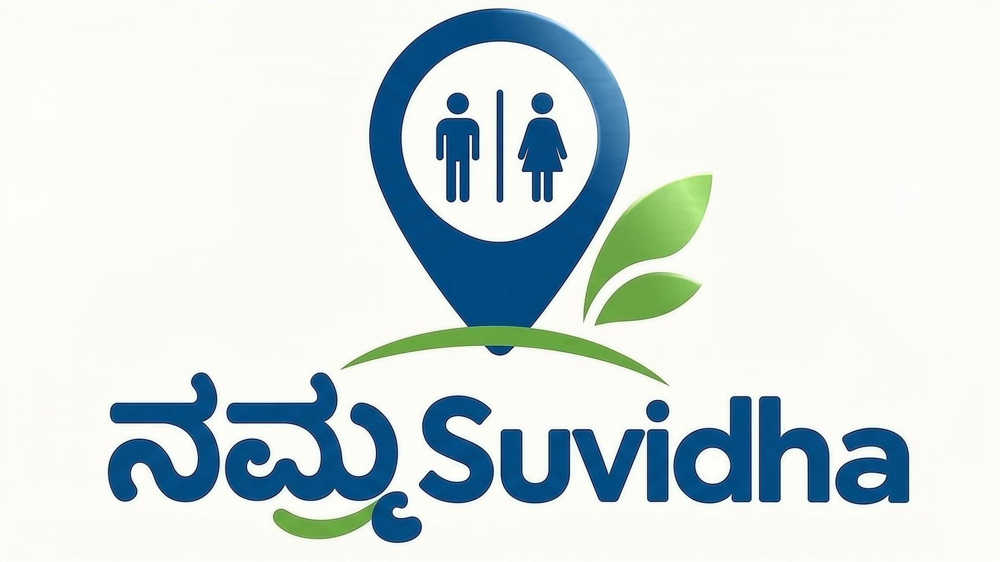

Bengaluru · Civic technology
Find public toiletsyou can actually trust.
Illustrative concept
A location is only a start
Is it usabletoday?
The map may show where a facility is. Its current condition still needs recent evidence.
03 / Citizen discovery
Actual application interface
Find the place.Check the details.
Map view · radius controls · municipal infrastructure records
500 m — 10 km search radius
BBMP inventory fields describe listed infrastructure. They do not certify live cleanliness or availability.
Genuine local UI capture · sample records not shown
Illustrative device concept
Negative feedback
NO → voice
can follow
A spoken explanation is optional in the proposed design.
The white panel, green / yellow / red buttons, and microphone are illustrative. Hardware is not deployed.
05 / Proposed · not deployed
From a report to a structured issue.
Future workflow
01
Physical
feedback device
05
AI-assisted
classification
06
Structured
maintenance issue
AI may organize reports for human review. It does not set official cleanliness scores or make enforcement decisions.
06 / Government monitoring
Human reviewstays in the loop.
The current build includes issue lifecycle APIs and audit history in a local, in-memory demo.
No deployed Government dashboard
Backend prototype · not a live service
Maintenance issue
✓
Authorized officer
reviews and acts
Test email provider · not delivered
Verification status
Evaluator inspections are not shown as verified.
Evaluator evidence submission has not been demonstrated end-to-end in this build.

One city. Better facilities. More dignity.
NAMMA SUVIDHA